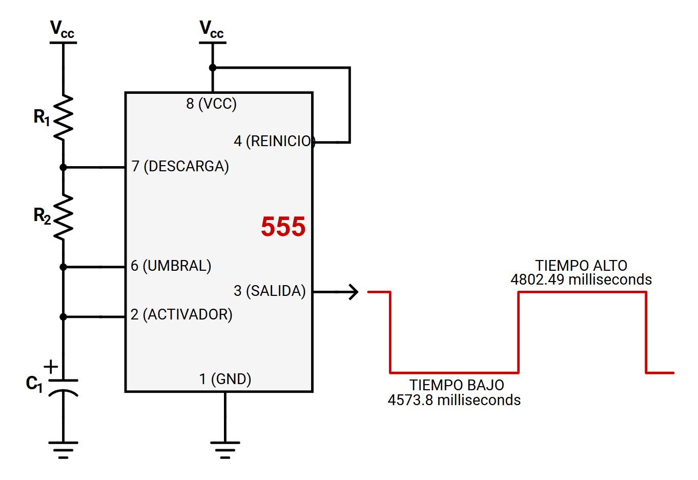
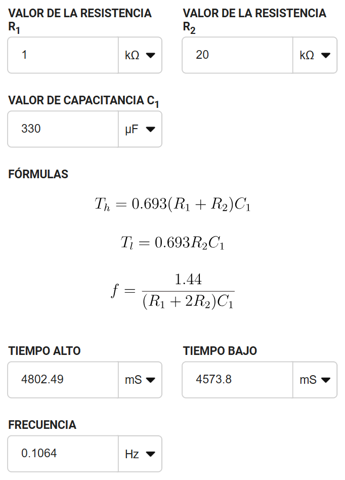

📚 Documentación de la Práctica – Temporizador 555 (modo Astable)
1) Resumen
-
Nombre del proyecto: Oscilador Astable con 555
-
Equipo / Autor(es): Alessandro Reyes, Jose Góngora, Sebastián Cortes
-
Curso / Asignatura: Introduccion a la mecatronica / Circuitos Digitales
-
Fecha: 05/09/2025
-
Descripción breve: Se diseñó un circuito con el temporizador 555 en modo astable para encender y apagar un LED cada 3–5 segundos, armado de forma física y documentado con evidencia en fotos y video.
-----------------------------------
2) Objetivos
General: Implementar un circuito oscilador astable con el CI 555 para controlar el parpadeo de un LED.
Específicos:
- Diseñar el circuito con valores adecuados de resistencias y capacitores.
- Calcular teóricamente los tiempos alto y bajo de la señal.
- Verificar en la práctica el correcto parpadeo del LED.
- Comparar resultados teóricos y experimentales.
-----------------------------------
3) Alcance y Exclusiones
Incluye:
- Implementación en protoboard del 555 en modo astable.
- LED parpadeando con periodo de 3–5 segundos.
- Documentación de cálculos y resultados.
- Evidencia en fotos y video.
- No incluye:
- Diseño de PCB.
- Simulación en software especializado.
- Implementación con microcontroladores.
-----------------------------------
4) Requisitos
Hardware
- 1 × CI 555
- 1 × Resistencia R1 = 1 kΩ
- 1 × Resistencia R2 = 20 kΩ
- 1 × Capacitor electrolítico C1 = 330 µF
- 1 × LED + resistencia limitadora (330 Ω – 1 kΩ)
- Fuente de alimentación (5–9 VDC)
- Protoboard y cables
Conocimientos previos
- Conocimientos previos - Ley de Ohm y cálculo de resistencias
- Funcionamiento del temporizador 555
- Uso de protoboard y multímetro
-----------------------------------
5) Instalación
1. Armar el circuito según el diagrama:

(Diagrama del temporizador 555 en modo astable)

(Calculos teoricos del Circuito)
Observación práctica:
El LED permanece encendido ~4.8 s y apagado ~4.6 s, cumpliendo con el requisito (3–5s).
-----------------------------------
6) Resultados
✅ LED parpadea dentro del rango esperado (aprox. 9.3 s de periodo total).
✅ El comportamiento práctico coincide con las fórmulas.
✅ El 555 demostró ser un generador confiable de pulsos de baja frecuencia.
Fotos del montaje físico:
Figura 3. Montaje físico – Vista 1

Figura 4. Montaje físico – Vista 2